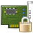
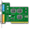
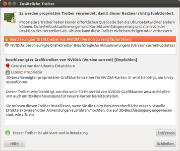
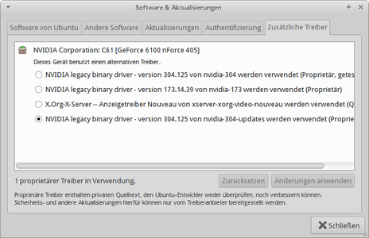

Zusätzliche Treiber
Dieser Artikel wurde für die folgenden Ubuntu-Versionen getestet:
Ubuntu 16.04 Xenial Xerus
Ubuntu 14.04 Trusty Tahr
Zum Verständnis dieses Artikels sind folgende Seiten hilfreich:

Ubuntu und seine Varianten bringen in der Standardinstallation bereits eine Vielzahl von Treibern mit, so dass sehr viel Hardware erkannt wird und sofort problemlos läuft. Einige Treiber sind aber standardmäßig nicht enthalten, weil z.B. deren Quelltext nicht öffentlich ist bzw. deren Lizenz nicht frei ist. Diese Treiber werden als "zusätzliche Treiber" bezeichnet und lassen sich nachträglich automatisch installieren. SecureBoot muss deaktiviert sein, um zusätzliche Treiber nutzen zu können.
Hinweis:
Wenn im Folgenden von "eingeschränkten Modulen" bzw. "eingeschränkten Treibern" die Rede ist, so bezieht sich dies nicht auf den Funktionsumfang oder die Leistungsfähigkeit des Treibers, sondern darauf, dass diese Treiber bzw. Module eben aus "eingeschränkten" (Closed-Source-)Quellen stammen (siehe Freie Standards).
Installation¶
Die Verwaltung zusätzlicher Treiber ist bereits Teil der Standardinstallation.
Benutzung¶
Hinweis:
Aktiviert bzw. deaktiviert man einen Grafikkarten-Treiber über die Verwaltung zusätzlichen Treiber, kann es eventuell zu einer falschen Konfiguration der Grafikkarte kommen. Dann kann man die Bildschirmauflösung von Hand neu einstellen.
Grafische Benutzeroberfläche¶
Die Verwaltung eingeschränkter Treiber ist als Reiter in der Paketquellen-Verwaltung zu finden. Sie kann aber meist auch über einen Menüeintrag direkt geöffnet werden:
Ubuntu:
"Systemeinstellungen -> System -> Anwendungen & Aktualisierung -> Zusätzliche Treiber"
Kubuntu:
"Anwendungen -> System -> Zusätzliche Treiber"
Xubuntu:
"Einstellungsmanager -> Zusätzliche Treiber"
Lubuntu:
"Einstellungen -> Anwendungen & Aktualisierungen -> Zusätzliche Treiber"
Ubuntu Gnome:
"Anwendungen & Aktualisierungen -> Zusätzliche Treiber"
Das Symbol der Verwaltung eingeschränkter Treiber sieht so aus: . Unter KDE so: .
|  |
| Ubuntu 12.04 |
|  |
| Xubuntu 14.04 |
Ruft man die Verwaltung ohne weitere Optionen auf, erscheint eine einfache grafische Benutzeroberfläche, in der man alle aktuell verwendeten eingeschränkten Module bzw. Treiber deaktivieren kann bzw. wo man Treiber für Hardware, deren Lizenz bestimmt, dass die Treiber nicht frei verteilt werden dürfen, aktivieren kann.
Dazu entfernt bzw. setzt man einfach per Mausklick den Haken bei "Aktiviert". Anschließend wird man gefragt, ob man den Treiber wirklich deaktivieren will. Ein Klick auf "Ok" macht dies dann endgültig.
Terminal¶
Hinweis:
Die Nutzung im Terminal ist "nur" eine Ergänzung zur graphischen Oberfläche. Es müssen trotzdem alle GTK-/Qt-Abhängigkeiten mit installiert werden, es gibt keine "reine" Textversion.
Das Programm ubuntu-drivers kann auch im Terminal genutzt werden. Die allgemeine Syntax lautet[2]:
sudo ubuntu-drivers OPTION
wobei u.a. folgende Optionen möglich sind:
| ubuntu-drivers - Optionen | |
| Option | Beschreibung |
list | zeigt die Paketnamen aller zusätzlich installierten Treiberpakete |
devices | zeigt eine Liste aller Geräte / Hardware, welche zusätzliche Treiber benötigten, sowie den Paketnamen des Pakets, in dem der Treiber enthalten ist |
autoinstall | installiert alle benötigten zusätzlichen Treiber automatisch |
Ab Kubuntu 15.04 ist das Programm auch im Terminal nutzbar; die allgemeine Syntax lautet [2]:
kcmshell5 driver_manager
Dabei gibt es folgende Optionen:
| restricted-manager - Optionen | |
| Option | Beschreibung |
-u | Aktualisiert die Liste der verfügbaren eingeschränkten Module. |
-c | Prüft, ob vom System weitere, in Jockey noch nicht registrierte Module, verwendet werden. |
-l | Zeigt alle aktuell auf dem System genutzten eingeschränkten Module an. |
-C oder --check-composite | Überprüft, ob ein eingeschränkter Grafiktreiber verfügbar ist, welcher besser für die Composite-Erweiterungen (z. B. Compiz) geeignet ist. |
-e Modul-Name oder -enable=Modul-Name | Lädt und aktiviert das eingeschränkte Modul "Modul-Name". |
-d Modul-Name oder -disable=Modul-Name | Deaktiviert das eingeschränkte Modul "Modul-Name". Das Modul wird dabei jedoch nicht auf der Festplatte gelöscht, sondern kann jederzeit wieder mit -e Modul-Name aktiviert werden. |
-h | Zeigt eine kurze Hilfe zu den Optionen von Jockey an. |
 Übersichtsseite
Übersichtsseite- Erstellt mit Inyoka
-
 2004 – 2017 ubuntuusers.de • Einige Rechte vorbehalten
2004 – 2017 ubuntuusers.de • Einige Rechte vorbehalten
Lizenz • Kontakt • Datenschutz • Impressum • Serverstatus -
Serverhousing gespendet von